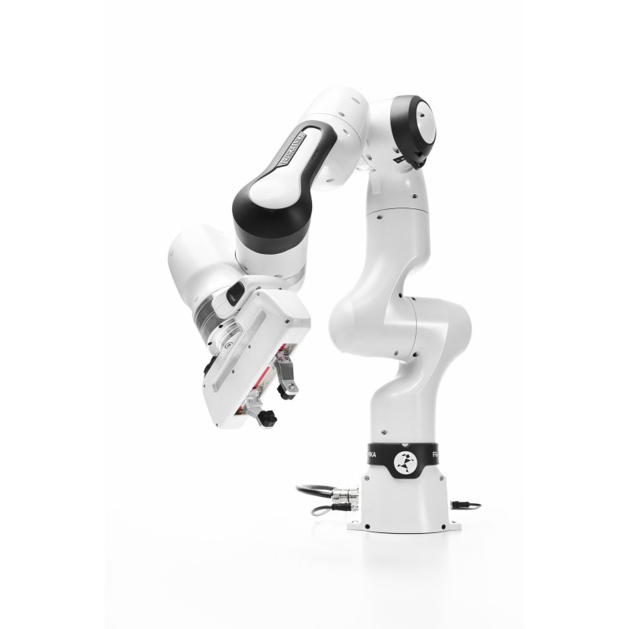
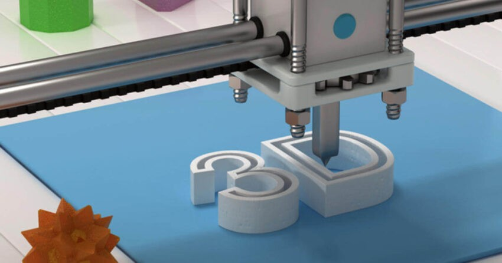
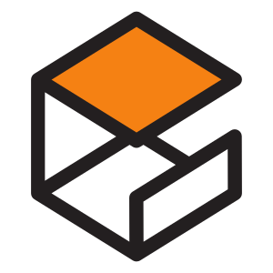

Article publié
Adhesion, sterilization resistance and heat deflection temperature of 3D printed PLA parts coated with hydroxyapatite by powder bed annealing
The International Journal of Advanced Manufacturing Technology
Lire l’article (DOI)Je suis en dernière année du cycle ingénieur en mécanique, spécialisé en robotique, et je suis en parallèle un master en automatique et robotique. À l’Institut Pascal, j’ai participé à l’implémentation d’une méthode de manipulation d’objets déformables, aux essais sur des bras robotiques et à l’analyse des résultats.
Stage de fin d’études de 6 mois · Disponible à partir de mars 2027
B2
Intermédiaire avancé
C1
Avancé
Natif
Langue maternelle

Institut Pascal · 2026
J’ai implémenté et testé une méthode qui permet à deux ou trois bras robotiques d’adapter un mouvement appris grâce à un retour visuel en temps réel sur la forme de l’objet.
Voir les expériences

SIGMA Clermont · S7–S8 · 2025–2026
En équipe, nous avons combiné un balayage simulé avec un UR3e, la vision RGB-D et Open3D pour produire un maillage 3D à partir de plusieurs vues d’une chaussure.
Voir la reconstruction

Université fédérale d’Uberlândia · 2022–2025
Le recuit en lit de poudre avec un revêtement d’hydroxyapatite a porté la température de fléchissement sous charge à au moins 150 °C. Les pièces testées ont ainsi pu être stérilisées en autoclave sans se déformer.
Lire l’étude de cas
SIGMA Clermont · S9 En cours
Projet de S9 avec un UR3e et une caméra montée sur le bras. L’objectif est de localiser un objet puis de le saisir et le déposer.
Article publié
The International Journal of Advanced Manufacturing Technology
Lire l’article (DOI)Manuscrit soumis
IEEE Robotics and Automation Letters (RA-L)
Voir les expériences Shape-DMPSix articles dans les actes du COBEM et du COBEF, répertoriés dans mon CV Lattes.
Quantificação de incerteza e calibração de células de carga com sistema de aquisição por Arduino
COBEF 2023Influência de parâmetros de impressão nas resistências ao impacto e à tração de peças produzidas pelo processo Fused Filament Fabrication
COBEF 2023Influence of annealing on PLA mechanical and thermal resistance
COBEM 2023Análise dos efeitos do recozimento na resistência ao impacto de peças poliméricas impressas por FFF
COBEF 2023Impact resistance of quenched 1045 steel bars for quick stop equipment in turning operations
COBEM 2023Diplôme d’ingénieur · Innovative Mechanisms and Robots (IMR)
Double diplôme d’ingénieur avec l’Université fédérale d’Uberlândia. Formation en anglais, avec des cours de robotique, de vision par ordinateur, de systèmes temps réel et de modélisation mécatronique.
Projet appliqué · Reconstruction 3D robotiséeMaster 2 · Automatique et robotique · Perception artificielle et robotique (PAR)
Master suivi en parallèle du cycle ingénieur à SIGMA Clermont. Le parcours couvre la vision par ordinateur, la fusion de données de capteurs, l’apprentissage automatique ainsi que la modélisation et la commande des systèmes robotiques.
Génie mécanique · Établissement d’origine du double diplôme
Formation en mécanique, matériaux, conception et procédés de fabrication, mise en pratique au laboratoire d’usinage par des travaux sur la fabrication additive et les matériaux imprimés.
Recherche appliquée · PLA imprimé en 3D